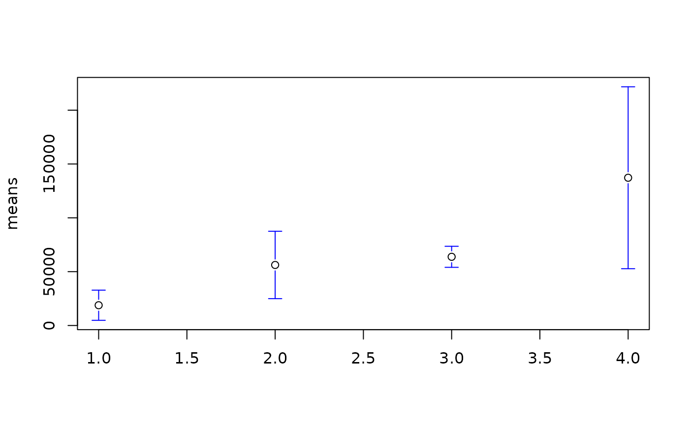
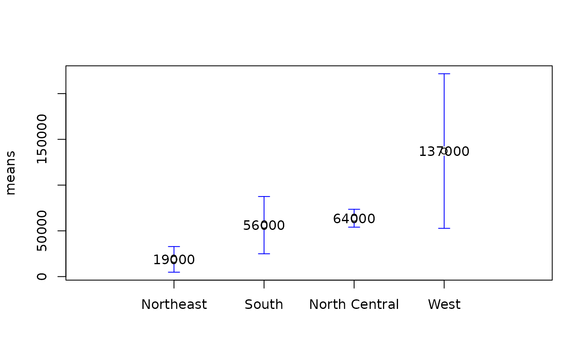
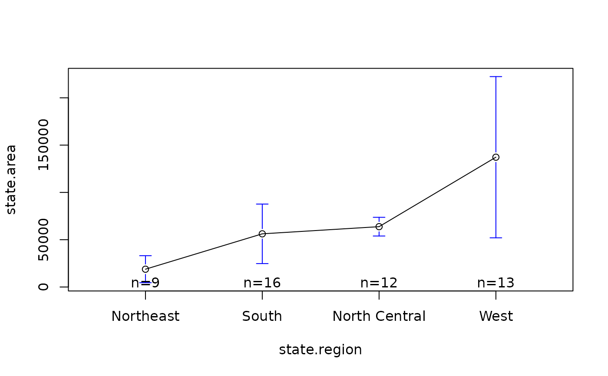
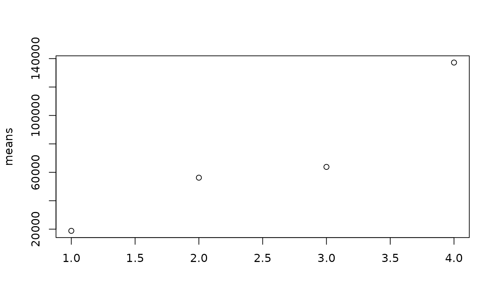
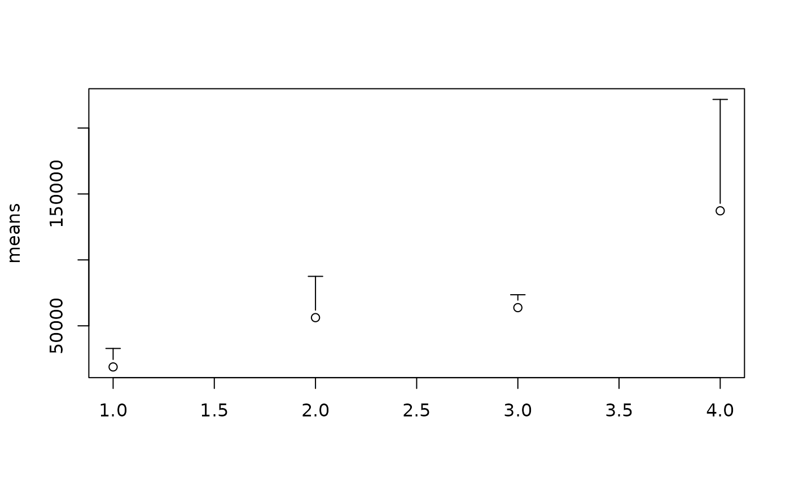
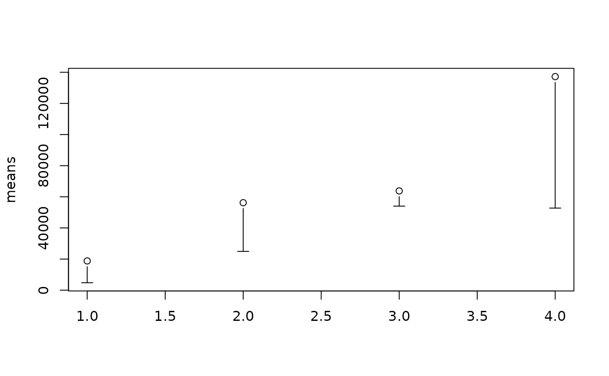
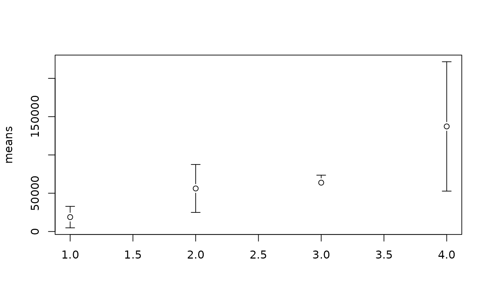
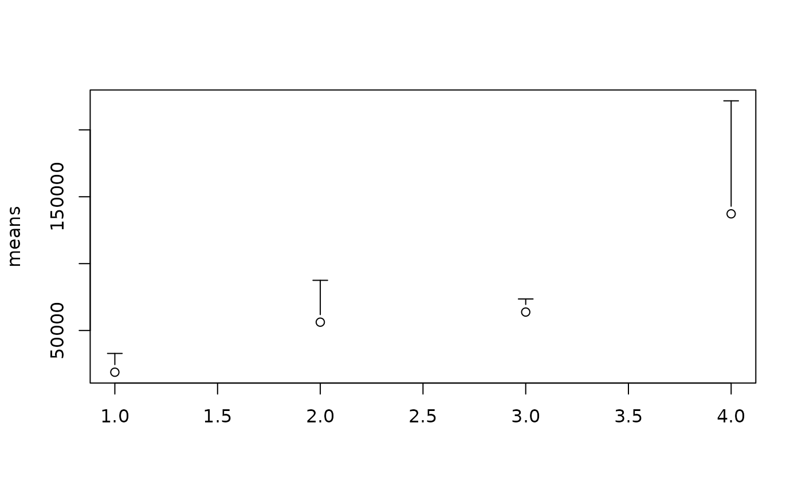
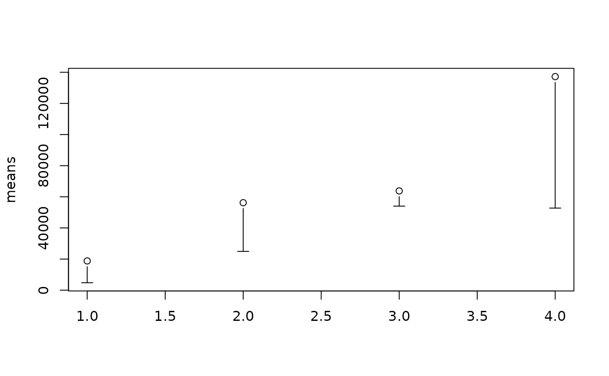
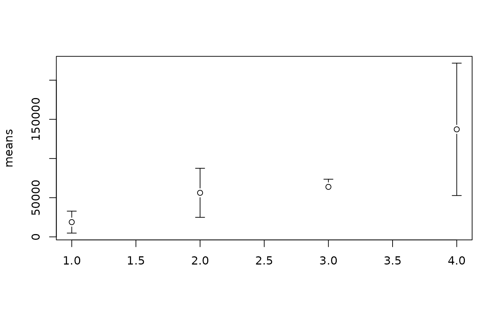

Plot Error Bars and Confidence Intervals
plotCI.RdGiven a set of x and y values and interval width or upper and lower bounds, plot the points with error bars. This can be a useful tool for visualizing confidence intervals.
Arguments
- x,y
coordinates for the center of error bars.
ydefaults to1:n.- uiw
width of the upper or right error bar. Set to
NULLorNAto omit upper bars.- liw
width of the lower or left error bar. Defaults to same value as
uiw. Set toNULLorNAto omit lower bars.- ui
upper end of error bars. Defaults to
y + uiworx + uiwdepeding onerr. Set toNULLorNAto omit upper bars.- li
lower end of error bars. Defaults to
y - liworx - liwdepedning onerr. Set toNULLorNAto omit lower bars.- err
direction for error bars. Set to "y" for vertical bars. Set to "x" for horizontal bars. Defaults to "y".
- col
color of plotting character used center marker of error bars. Default is "black".
- xlim, ylim
range of x/y values to include in the plotting area.
- type
point/line type; passed to
points- barcol
color of the error bars. Defaults to the same value as
col- pt.bg
background color of points (use
pch=21, pt.bg=par("bg")to get open points superimposed on error bars).- sfrac
width of "crossbar" at the end of error bar as a fraction of the x plotting region. Defaults to 0.01.
- gap
space left between the center of the error bar and the lines marking the error bar in units of the height (width) of the letter "O". Defaults to 1.0
- lwd
width of bar lines.
- lty
line type of bar lines.
- labels
either a logical value indicating whether the circles representing the x values should be replaced with text giving the actual values or a vector containing labels to use instead. Defaults to
FALSE.- add
logical indicating whether error bars should be added to the current plot. If
FALSE(the defailt), a new plot will be created and symbols/labels for the x values will be plotted before drawing error bars.- minbar
minumum allowed value for bar ends. If specified, values smaller than
minbarwill be replaced withminbar.- maxbar
maximum allowed value for bar ends. If specified, values larger than
maxbarwill be replaced withmaxbar.- ...
optional plotting parameters
- xlab
label for x axis.
- ylab
label for y axis.
See also
plotmeans provides an enhanced wrapper to
plotCI.
Examples
# plot means and
data(state)
tmp <- split(state.area, state.region)
means <- sapply(tmp, mean)
stdev <- sqrt(sapply(tmp, var))
n <- sapply(tmp,length)
ciw <- qt(0.975, n) * stdev / sqrt(n)
# plain
plotCI(x=means, uiw=ciw)
# prettier
plotCI(x=means, uiw=ciw, col="black", barcol="blue", lwd=1)

# give mean values
plotCI(x=means, uiw=ciw, col="black", barcol="blue",
labels=round(means,-3), xaxt="n", xlim=c(0,5) )
axis(side=1, at=1:4, labels=names(tmp), cex=0.7)

# better yet, just use plotmeans ... #
plotmeans( state.area ~ state.region )


 

#> Warning: "ciw" is not a graphical parameter
#> Warning: "ciw" is not a graphical parameter
#> Warning: "ciw" is not a graphical parameter
#> Warning: "ciw" is not a graphical parameter
#> Warning: "ciw" is not a graphical parameter
#> Warning: "ciw" is not a graphical parameter
#> Warning: "ciw" is not a graphical parameter



#> Warning: "ciw" is not a graphical parameter
#> Warning: "ciw" is not a graphical parameter
#> Warning: "ciw" is not a graphical parameter
#> Warning: "ciw" is not a graphical parameter
#> Warning: "ciw" is not a graphical parameter
#> Warning: "ciw" is not a graphical parameter
#> Warning: "ciw" is not a graphical parameter
